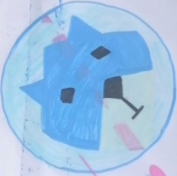

FrostyLobo
About Me
Hello! I'm FrostyLobo, an ordinary Visual Effects Artist and Video Game Developer from Myanmar. I create short VFX clips just for fun. I mostly do mixed reality type visual effects. In Game Development, I make 3D First Person games. In video making, I'm dedicated to not using any AI Generated Media in my creations.
My goal is to keep crafting digital experiences that will last long eternally as Inazuma.
My Rig
Camera:
No Video Camera (Smartphone: Xiaomi 11i 5G)
Desktop:
CPU: Core™ i5 4th Gen
RAM: Kingston DDR3 4GB (x2)
GPU: NVIDIA GeForce GTX 1650 4GB
Capacity: Teelkoou SSD 128GB + Seagate HDD 512GB
Laptop:
CPU: Core™ i5 8th Gen
RAM: DDR4 8GB
GPU: NVIDIA GeForce MX150 2GB
Capacity: SanDisk NVMe 256GB
I LOVE OPEN SAUCE !!!